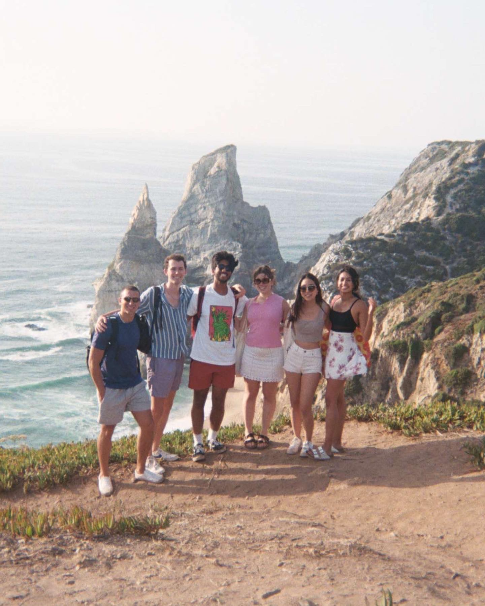

I'm Smera — a UX designer trained in cognitive science & global entrepreneurship, fluent in what makes humans tick. I've run 100 user interviews for the NIH, redesigned broken job portals, and tripled event participation in three weeks.
LET'S TALK →As an experience aficionado, I stay observant and curious. I find that being in unfamiliar places primes you for innovation and insights, so I love exploring.

UX Designer · Cognitive Science · Human-Centered Design
"She is strong and organized and her passion was evident in her independent research. We were very pleased and proud to have her on our team."